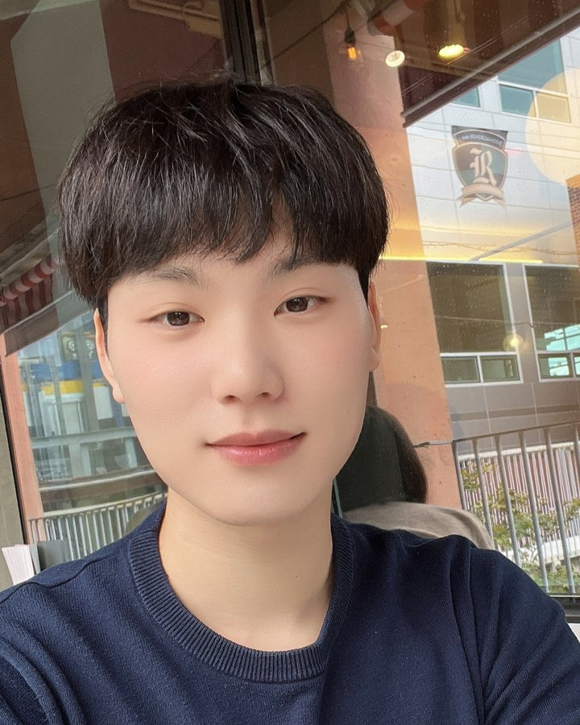

Jincheol Yang
Ph.D. candidate in Electronic Engineering
Sogang University, Seoul, South Korea
I'm a Ph.D. candidate at Sogang University, advised by Prof. Suk-Ju Kang. I work on efficient AI for computer vision: making large vision models smaller and faster to run while keeping their accuracy.
My recent work focuses on post-training quantization (PTQ) for vision transformers (ViTs) and monocular depth estimation (MDE), and on KV cache compression and sparse attention for visual autoregressive (VAR) and video models. I also collaborate with Samsung Electronics and Samsung Display on model compression, energy-efficient hardware acceleration, and image restoration.
- Post-training quantization
- KV cache compression
- Sparse attention

Quantized to 4 bits. Click to try another bit width.
Publications
† Corresponding author
Research experience
Industry collaborations and internships
-
Sep 2025 – Present
Samsung Electronics
Research collaboration
Memory-efficiency-focused model compression and optimization techniques for large-scale deep learning models.
-
Mar 2025 – Present
Samsung Display
Research collaboration with the Computer-Aided Engineering team
Developing AI technology for image quality restoration.
-
Sep 2024 – Sep 2025
Samsung Electronics
Research collaboration
Developed a memory-fused, transfer-operation-based deep learning hardware accelerator for better energy efficiency.
-
Jul 2023 – Feb 2025
Samsung Display
Research collaboration with the Computer-Aided Engineering team
Developed AI technology for image-based depth estimation.
-
Jul 2022 – May 2023
Korea Electronics Technology Institute (KETI)
Research intern, Intelligent Image Processing Research Center
Education
-
Sep 2023 – Present
Sogang University
Ph.D. candidate, Electronic Engineering. Advisor: Prof. Suk-Ju Kang
-
Feb 2022
Korea University of Technology and Education
B.S., Electronic Engineering
Awards
-
Aug 2026
Best Poster Award
The 26th International Meeting on Information Display (IMID 2026)
-
Dec 2025
Best Paper Award
Department of Electronic Engineering, Sogang University
Academic service
- Conference reviewer
- NeurIPS 2026, ICLR 2027
- Journal reviewer
- Information Fusion (2026)
Skills
- Languages
- Python, C++, Java
- ML frameworks
- PyTorch, TensorRT
- Embedded
- NVIDIA Jetson, Qualcomm SNPE